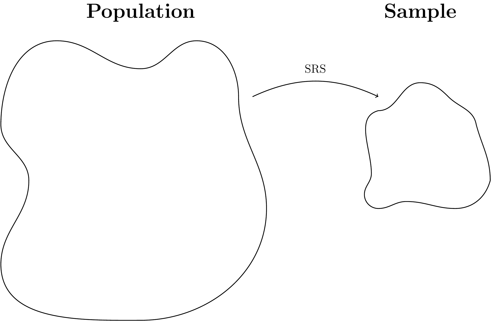

4 Why Descriptive Statistics?
Descriptive Statistics, as the name implies, are about describing something. In general, we can only describe what we have at hand, so descriptive statistics only deal with the population in the very, very, very rare case when we have measured the entire population. It is way more common that descriptive statistics are about the sample at hand.
Often when conducting an experiment, what we are actually interested in is using the sample we obtain to say something about the general population. If we, for example, enroll 200 patients in a study to find out if a new drug works, we’re not really interested in whether or not it works for those 200 patients specifically, but more so if it works for any individual from the population in general. With that in mind, the whole concept of descriptive statistics might not seem very (1) exciting, (2) useful, or (3) necessary. While (1) is highly subjective, (2) very much so depends on the specific situation, there is little question that it is in fact necessary.
Recall our general setup for any statistical analysis: we have some question about some feature of a population. To answer this question, we go get a sample of the population. If this is a good sample, the characteristics of this sample mimic those of the general population. If this is the case, then the hope is that we can draw conclusions about the sample, and generalize them to the general population. Conversely, if that is not the case, then no matter how convincing the evidence we find in the sample is for or against our hypotheses, it tells us nothing about the general population.

So how do we make sure the sample is representative of the population? The first step is to make sure our sampling scheme is good. Ideally, we sample completely at random, meaning that every single individual in the population has the same chance of ending up in the sample. As you might be able to guess, this is rarely the case, but if the sampling is done right it is either approximately true, or the sampling is done in a way that any biases introduced can be accounted for in the analysis.3 Most commonly, sampling is done in such a way that the “equal chance” assumption isn’t too crazy. But how do we know if this is actually the case?
The truth is, we don’t really. What we can do, though, is describe the sample we obtain. That way we can make sure we don’t generalize any results to an inappropriate population. Historically, this mistake has been made over and over again in medical research when excluding women and ethnic minorities from studies.4 For this particular reason, producing descriptive statistics is often the first step in any data analysis.
The rest of this section will go through different types of data, and show how we, in each case, can describe (or summarize, if you will) the specific type of data.
In general, when we talk about data we often refer to variables. Variables are simply (and very vaguely) things we measure. You will see examples which hopefully helps understand exactly what is meant by a variable.